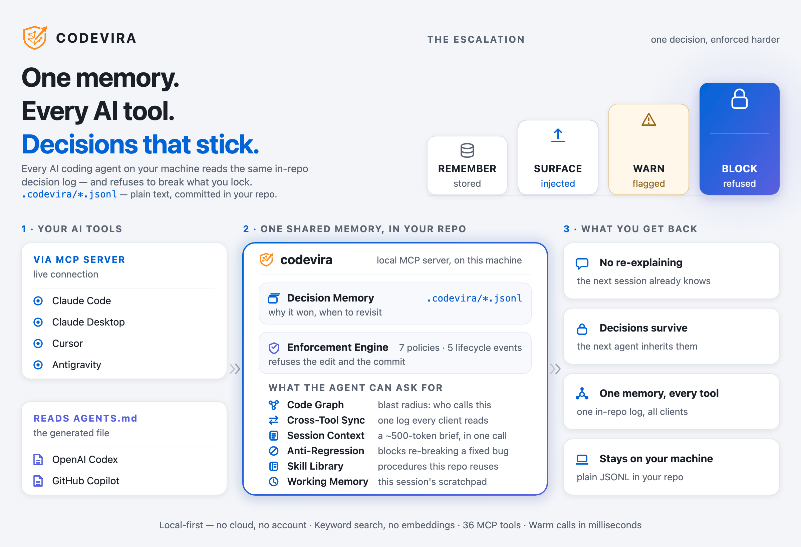
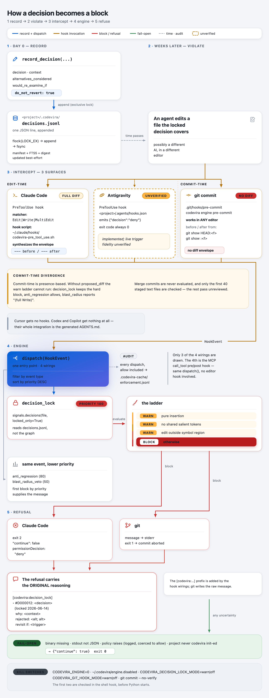
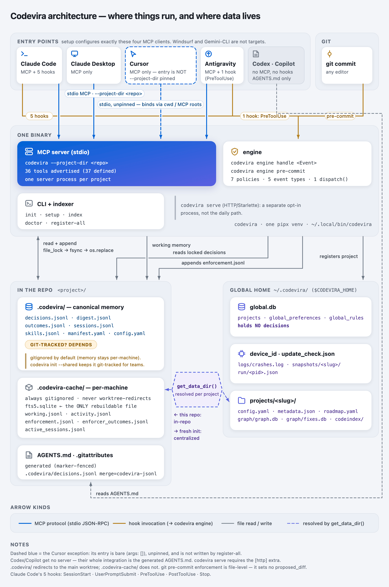
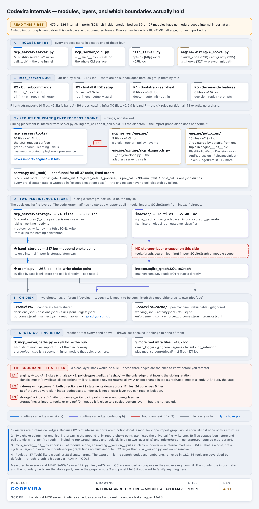

Codevira — persistent memory and decision enforcement for AI coding agents
Stop re-explaining your codebase to every AI tool — and stop the next agent from undoing the fix that took you three hours.


Quick Start· See it in action· Reference· vs. other memory tools· FAQ· Website
This page is the project README, rendered as part of this site — view the source on GitHub ↗
Codevira is a local-first MCP server (Model Context Protocol) that gives every AI coding agent on your machine one shared, in-repo memory of the decisions you've made and why. What one tool learns, all of them know — and a decision you lock, none of them can silently undo: codevira refuses the edit in Claude Code and the commit in any editor.
pipx install codevira # ~66 MB pipx venv, no ML deps, no vectors
cd ~/Projects/my-project
codevira init # opt this project in
codevira setup # wire it into the AI tools on this machine| What it is | A local MCP server that stores your project's decisions together with the reasoning behind them, in your repo. |
| What's different | It doesn't just remember — mark a decision do_not_revert and it physically blocks the edit (Claude Code) and, once you install the git hook, the commit (any editor) that would undo it. |
| Who it's for | Anyone running two or more AI coding tools on the same repo. |
| Default scope | Per-machine — memory is not git-tracked. codevira init --shared commits .codevira/ so teammates on the same repo share one decision log. |
| Cost | MIT · local-first · no cloud · no account · no vectors · nothing phones home. |
Claude Code · Claude Desktop · Cursor · Google Antigravity · OpenAI Codex · GitHub Copilot · any MCP-compatible AI tool
30-second demo: MP4 · WebM · offline HTML player (no network, after cloning)
The whole thing on one page — solution blueprint

Why Codevira
AI agents write a large share of your code now. They're fast and capable, but each one is stateless across sessions and blind to the others — so you quietly became the memory.
| The pain | What Codevira does |
|---|---|
| Re-explaining your codebase every session — ten minutes and thousands of tokens, then again tomorrow | Every tool opens with the project's decisions already loaded |
| An agent "simplifies" a fix it never knew the reason for — three hours of debugging, undone | A locked decision is refused at the edit (Claude Code) and at the commit (any editor), with the original reasoning attached |
| Cross-tool amnesia — plan in Claude Code, code in Cursor, nothing carries over | One in-repo memory every MCP client reads |
| Token budget burned on re-discovery — the same dozen files re-read every session | Summary-first recall of only what's relevant |
The root cause under all four: your decisions live in your head, not anywhere the AI can be held to them.
Codevira is not a knowledge base. A knowledge base answers "what is true?" and hopes the agent reads it. Codevira answers "what did we decide, and why?" — then blocks the edit that would break it.
See it in action: record, block, recall
1. You (or the AI) record a decision — one MCP call, ~50 tokens.
record_decision(
decision="Use bcrypt for password hashing",
context="md5 considered and rejected — rainbow-table risk. Re-examine only if NIST guidance changes.",
tags=["auth", "security"],
do_not_revert=true,
)
→ D000412 recorded and locked.It lands in <repo>/.codevira/decisions.jsonl — plain text, human-readable, and diffable (and
git-tracked as soon as you run codevira init --shared). Codevira regenerates a slim AGENTS.md
contract from it — that file is always committed.
2. Weeks later, a fresh Claude Code session tries to swap bcrypt for md5.
The Edit goes through Claude Code's PreToolUse hook first. Because the diff touches the
locked decision's subject, the hook denies the tool call and hands the agent the original
reasoning:
✗ Edit blocked — decision_lock (do_not_revert)
D000412: "Use bcrypt for password hashing"
context: md5 rejected — rainbow-table risk.
The file was not modified. Surface this to the human and re-decide deliberately.The regression never reaches disk. An orthogonal edit to the same file — one whose diff doesn't touch the decision's subject — is allowed through and downgraded to a warn. Precision, not paranoia.
3. You switch to Cursor the next morning — and it already knows.
You never re-explained anything. Cursor reads the same repo AGENTS.md and, over MCP, can call
search_decisions("auth") — D000412 comes back with its full context. A decision recorded in
one tool is visible to every tool.
Where the block is physical. Edit-time in Claude Code; commit-time in every editor via
codevira engine install-git-hook— because they all commit with git. Overrides, kill-switches and the precise boundary: Enforcement engine (expand).
The whole path, in one diagram — record → violate → intercept → engine → refuse

What you get
| What it means | |
|---|---|
| One memory, every AI tool | A decision logged in Claude Code is visible to Cursor, Antigravity, Codex, Copilot — all read the same .codevira/decisions.jsonl and generated AGENTS.md. No per-tool re-onboarding, no cloud sync. |
| Enforcement, not notes | do_not_revert refuses the edit in Claude Code and refuses the commit in any editor. An Anti-Regression guard also blocks re-introducing a previously-fixed bug. Every guard ships a warn/off kill-switch. |
| One-command setup | codevira setup detects installed AI tools via strong signals (binary on PATH + valid config file) and configures only what's actually there. --force overrides a missed detect. |
| Local-first, no ML | Decision search is pure keyword/BM25 over SQLite FTS5 — no vectors, no ChromaDB, no sentence-transformers, no torch, nothing phones home. ~1–2 MB of memory per project. |
| Frugal by design | Tools return summaries by default; get_session_context() is one ~500-token call; the server cold-starts in well under a second with no ML model to load. |
| Concurrent-safe | Every write is a crash-safe atomic write behind a Posix fcntl.flock, so two IDEs on one project don't race. Details (expand) |
Latest: 4.2.0. Upgrade if you use codevira in more than one project: a stray registration at $HOME could make register-all discover exactly one project and discard every real one as “nested” (measured on a real machine: 1 found, 11 excluded). 4.2.0 also stops background work writing false entries to the crash log — 39 of 45 entries on that machine were one harmless line — and adds codevira reconcile to report duplicate and contradicting decisions. Upgrading is automatic, but a registration that was already wrong is not repaired for you: run codevira register-all once after upgrading to recover projects that went missing. Full release notes →
Quick Start
# 1. Install (production install: ~66 MB pipx venv, no ML deps)
pipx install codevira
# 2. Opt this project in (writes .codevira/, AGENTS.md, .gitignore)
cd ~/Projects/my-project
codevira init
# 3. Wire codevira into every AI tool detected on this machine
codevira setup
# 4. Install the universal commit-time backstop (enforces do_not_revert in ANY editor)
codevira engine install-git-hookStep 4 is what makes enforcement universal. codevira init installs only a post-commit
reindex hook; the enforcing pre-commit hook is this separate, explicit opt-in.
Open any IDE — codevira's MCP server is ready. Then, in your AI tool, ask:
"Use get_session_context to brief me on this project." You get a ~500-token structured
project state in one tool call instead of the AI re-reading docs.
Verify the install:
codevira doctor # health checks: ✓/⚠/✗ + a fix command for each
codevira replay # browse the decisions timeline
codevira sync # regenerate AGENTS.md from current decisions.jsonlTeam sharing. By default codevira keeps decision memory per-machine (not committed), so
unrelated projects never bleed into each other; AGENTS.md and .gitignore are still committed.
To share memory with teammates on the same GitHub repo, run codevira init --shared — it keeps
.codevira/ git-tracked, and a built-in git merge driver reconciles concurrent edits.
Opt-in tracking.
codevira initis the explicit opt-in. Codevira tracks only projects you'veinit-ed; a project you merely open stays inert (its tools return a "runcodevira init" hint and nothing is written), so~/.codevira/projects/never fills with projects you didn't choose. SetCODEVIRA_AUTO_ADOPT=1to track every project you open instead.
How it works
A local MCP server. Decisions live in <repo>/.codevira/*.jsonl — plain text, human-readable,
diffable, and git-tracked once you opt in with init --shared. A slim AGENTS.md is generated
from them for every IDE to read, and Claude Code lifecycle hooks — plus the opt-in git
pre-commit hook — enforce the ones you locked.

Full file layout and hook flow
![Codevira file layout and hook flow: three stacked layers. In the project repo, .codevira/ holds decisions.jsonl, digest.jsonl, outcomes.jsonl, manifest.yaml, enforcement.yaml, config.yaml, sessions.jsonl, roadmap.yaml and skills.jsonl; AGENTS.md is generated from it; .codevira-cache/ holds fts5.sqlite, hash-cache.db and working.jsonl and is gitignored; the code graph is a per-project SQLite db under ~/.codevira/, not in your repo. Below it, one pipx-installed codevira binary (CLI plus MCP server, ~66 MB venv, no chromadb, sentence-transformers or torch, no model, cold-start well under 1 s, warm tool calls ~2 ms), reached over MCP and hooks. Below that, your IDE and its four hook points: UserPromptSubmit into a relevance-gated inject, Edit or Write into PreToolUse which blocks if a do_not_revert decision is violated, PostToolUse into the Post-Edit Graph Refresh and working-memory fanout, and Stop into the Token Budget and Session-Log Enforcer.](assets/file-layout.png)
codevira init scaffolds everything above except roadmap.yaml and skills.jsonl, which are
written on first use. Deeper detail: docs/architecture.md.
Built to be trusted
Codevira holds a team's architectural decisions and can refuse your AI's edits. Every guarantee below is checked by the build, not asserted in this file.
| Test suite | 3,499 tests across 165 test files. More test code than product code (60,960 vs 46,782 lines). |
| CI | Every push to main and every pull request runs the suite on Python 3.10 / 3.11 / 3.12 / 3.13, plus a separate random-order run (collection-order blindness had hidden real state-leak bugs) and a mypy type-check job. |
| "Local-first" is enforced, not promised | tests/test_egress_boundary.py walks the import graph of the shipped package with an AST scan and fails the build if any module other than egress.py imports a network client. |
| Adversarial testing | scripts/chaos_smoke.py runs 8 hostile scenarios — SIGKILL during a held lock, symlink traversal, malformed MCP payloads, corrupt-JSONL degradation, read-only directories. |
| No destructive MCP tools | Every MCP tool carries destructiveHint=false. The only destructive operations (reset, uninstall) are CLI-only and require a typed confirmation — an autonomous agent cannot reach them. |
| Reversible memory | After a default init, .codevira/ is not git-tracked — so git revert can't undo a bad migration or an accidental wipe. codevira memory snapshot + codevira memory undo can, and the undo is itself undoable. |
What's solid, what's not
| Production-stable | Known-limited |
|---|---|
| Cross-IDE decision memory via in-repo JSONL | Hard PreToolUse enforcement at edit time is Claude Code only; other IDEs read AGENTS.md (advisory) and are backstopped at the commit boundary |
do_not_revert enforced at the Claude Code hook and, in any editor, at the commit boundary (codevira engine install-git-hook) | Graph tools cover Python / TS / JS / Go / Rust; other languages → the AI Reads the file directly |
| FTS5/BM25 decision search | Real-time multi-machine sync — by design local-first; for team sharing, run codevira init --shared |
Per-project + cross-machine project inventory (global.db) | No web UI — use the codevira://decisions MCP resource, or codevira replay --format html |
36 MCP tools advertised in tools/list (37 defined — refresh_graph is hidden) + 26 CLI commands + 7 engine policies | The HTTP server (codevira serve) is single-project per launch — for daily use, stick with stdio |
Concurrent-safe storage (Posix fcntl.flock + Windows sentinel), thread + subprocess + chaos-tested | Windows sentinel fallback is verified in unit tests but not yet load-tested on real Windows |
Anti-Regression on small Edit/MultiEdit hunks | Anti-Regression does not yet detect full-file Write reverts; accuracy depends on fix: commit hygiene |
Reference
Everything below is depth for when you need it. Each section is collapsed — open the one you came for. Browser find-in-page does not search inside a closed section, so expand before Ctrl+F. What's in them:
CLI init setup doctor status projects untrack index sync repair-ids observe-git
replay search graph memory export import engine prune reset uninstall serve
working induce-skills eval register-all merge-driver
Env CODEVIRA_ENGINE CODEVIRA_TOOL_PROFILE CODEVIRA_DECISION_LOCK_MODE
CODEVIRA_ANTI_REGRESSION_MODE CODEVIRA_BLAST_RADIUS_MODE CODEVIRA_GIT_HOOK_MODE
CODEVIRA_DECISION_LOCK_CONTENT_AWARE CODEVIRA_SESSION_LOG_ENFORCER_MODE
CODEVIRA_AUTO_ADOPT CODEVIRA_IDEMCP tool surface
36 tools advertised (37 defined) — the lean-12 profile, every read/write tool, and what 4.0 removed
36 tools are advertised to AI clients via tools/list (37 are defined — a 37th,
refresh_graph, is registered but hidden; humans invoke it via codevira sync). Every tool
carries MCP ToolAnnotations (readOnlyHint / destructiveHint=false / idempotentHint): most
are read-only and can run without a confirmation prompt, and no MCP tool is destructive — the
only destructive ops (reset / uninstall) are CLI-only, never exposed over MCP. Good to know
for anyone wiring codevira into an autonomous agent.
The lean 12 (CODEVIRA_TOOL_PROFILE=lean) are the ones you keep — set that in the MCP
server's env block to cut tools/list from 36 tools to 12, roughly a two-thirds smaller
payload (~8.9K → ~3.5K tokens of fixed per-session cost). Hidden tools still work when called
explicitly.
get_session_context · get_impact · get_node · get_roadmap · search_decisions
list_decisions · expand · record_decision · update_phase_status
complete_phase · update_next_action · write_session_logReads — the memory surface
| Tool | Description |
|---|---|
get_session_context | THE "catch me up" call. ~500 tokens: current phase, next action, recent decisions, top tags, last session brief. |
search_decisions(query) | FTS5/BM25 over decisions.jsonl. Top 5 truncated by default; full=true / summary_only=true. all_projects=true searches every registered repo, tagging each result with its project. |
expand(ids=[…]) | Fetch full records for just the ids you care about — the summary-first complement to search_decisions / list_decisions. Read-only; in the lean 12. |
list_decisions | Paginate / filter: since_date, file_pattern, protected_only, tags, include_superseded. |
list_tags | All tags with decision counts. |
get_history(file_path) | Recent decisions touching a file. |
check_conflict(decision_text) | Surface duplicate / contradictory decisions BEFORE you write. |
Writes — capturing decisions
| Tool | Description |
|---|---|
record_decision | Capture a decision. do_not_revert=true triggers Claude Code PreToolUse enforcement; symbol="login" scopes the lock to one function/class. It supersedes a strong unprotected near-duplicate instead of appending a twin. |
supersede_decision(old_id, new_decision, reason) | Retire an old decision, link to its replacement, keep the audit trail. |
mark_decision_outdated(decision_id, reason) | Retire a decision that's simply no longer true (no successor) so it stops surfacing. Reversible via set_decision_flag. do_not_revert needs force=True. |
reaffirm_decision(decision_id) | Re-confirm a soft-expired do_not_revert lock. |
set_decision_flag(decision_id, …) | Toggle do_not_revert / tags / is_outdated. |
write_session_log | Structured session record. |
Roadmap — get_roadmap · get_phase · add_phase · update_phase_status ·
update_next_action · complete_phase · defer_phase · bulk_import_phases.
Code graph — get_node (file metadata) · get_impact (blast radius) · query_graph
(function-level callers/callees/tests/dependents/symbols) · get_playbook (curated rules for
add_tool / add_service / add_schema / debug_pipeline / commit / write_test). Plus the
hidden refresh_graph.
Memory subsystems
| Subsystem | Tools | What it covers |
|---|---|---|
| Working memory (4) | working_add, working_get, working_promote, get_working_context | Intra-session scratchpad, decay-scored (importance × e^(−Δt/τ=6h) + 0.5·access_count), capacity-bounded. Auto-populated by the PostToolUse fan-out. |
| Skill library (6) | record_skill, get_skill, apply_skill_outcome, list_skills, supersede_skill, promote_skill_to_playbook | Reusable procedures; FTS5 composite ranking (BM25 + tag-Jaccard + recency); auto-archive at 5 consecutive failures or 90 unused days (do_not_revert exempt). |
| Provenance (1) | origin_of | Which IDE, which machine, when — what attributes an amendment across a two-host merge. (CODEVIRA_IDE is a cooperative signal, spoofable, not a security boundary.) |
Workflow prompt — onboard_session: full project catch-up for new sessions; wraps
get_session_context().
Removed in 4.0 (52 tools → 37 defined; 36 advertised). Cut on measured usage across 4,203
transcripts, not taste — the data they wrote is untouched, and codevira export still includes
everything. See MIGRATING.md.
| Removed | Instead |
|---|---|
consensus_check, consensus_status, consensus_propose_supersession, consensus_resolve | origin_of |
reflect, get_reflections, list_reflections | — |
spatial_nearby, spatial_heat, spatial_neighborhood, spatial_affordances | get_impact |
distill_preferences, search_preferences | the style panel in get_session_context |
get_code, get_signature | read the file — both measured zero calls in 2.5 months |
Enforcement engine
The 7 default policies, how verdicts combine, and every kill-switch
Codevira ships 7 default engine policies ("heroes"), each hooked to Claude Code lifecycle
events: SessionStart, PreToolUse, PostToolUse, UserPromptSubmit, Stop.
| Policy | Event | What it does |
|---|---|---|
| Decision Lock | PreToolUse | Blocks an edit that touches a do_not_revert decision's subject. Content-aware: a provably-orthogonal edit downgrades to a warn; a token-touching edit blocks. Strict file-level locking via CODEVIRA_DECISION_LOCK_CONTENT_AWARE=0. |
| Anti-Regression | PreToolUse | Blocks edits that look like reverts of previously-fixed bugs. Fix-history is scanned from fix: / bug: / hotfix: / fixes #N commit messages and self-freshens on read when git HEAD advances. Caveat: calibrated for small Edit/MultiEdit hunks; full-file Write reverts are deliberately exempt (future work). |
| Blast-Radius Veto | PreToolUse | Blocks a signature-removing/modifying edit to a high-fan-in file (purely-additive signatures pass). Shows the callers. |
| Relevance Inject | UserPromptSubmit | Injects ≤3 relevant decisions per prompt; 0 tokens when off-topic. |
| Session-Log Enforcer | SessionStart + Stop | Blocks (or, in warn mode, nudges) a session that shipped commits without a write_session_log. A second consecutive block degrades to a warn so a session that genuinely cannot log still finishes. |
| Post-Edit Graph Refresh | PostToolUse | Reindexes edited files in the background. |
| Token Budget / telemetry | Stop | Records outcome telemetry. |
How verdicts combine. The three edit guards compose into a single verdict — first block wins by priority (Decision Lock 100 > Anti-Regression 80 > Blast-Radius 50). The highest-priority block's message is what you see; the rest are recorded as telemetry.
Fail-open and opt-in. The dispatcher never raises: each policy is wrapped in try/except and
returns allow on failure. CODEVIRA_ENGINE=0 disables all policies; each edit guard also has a
per-policy off|warn|block env override (CODEVIRA_DECISION_LOCK_MODE,
CODEVIRA_ANTI_REGRESSION_MODE, CODEVIRA_BLAST_RADIUS_MODE). Enforcement is not global
across all Claude Code projects — in any project you never ran codevira init on, the hooks stay
fully inert.
The universal backstop (4.0). codevira engine install-git-hook installs a pre-commit hook
that runs locked decisions against staged changes through the same engine — so a do_not_revert
decision is enforced in any editor, because they all commit with git. git commit --no-verify
overrides a single commit; CODEVIRA_GIT_HOOK_MODE=warn (or off) changes it globally; merge
commits are never blocked.
Why edit-time blocking is Claude Code only. The hard-block path is Claude Code's real
PreToolUse hook. Edits from Cursor / Codex / Copilot go straight to the filesystem — they never
reach codevira's PreToolUse engine — so those IDEs get decisions as advisory AGENTS.md
context, with the git pre-commit hook as the universal backstop. Verified: Claude Code returns
permissionDecision: deny (exit 2) with the decision's reasoning, rejected alternatives and
re-examination trigger attached; the git hook refuses the commit with the same reasoning. Other
IDEs are supported but verified one at a time rather than inferred.
CLI commands
26 commands — the daily-use table, plus what's safe vs destructive
26 subcommands. Two are internal (merge-driver, invoked by git's merge driver, and
register-all, a setup helper); three more are advanced (working, induce-skills, eval).
The daily-use ones are below — run codevira <cmd> --help for full flags:
| Command | What it does |
|---|---|
codevira init | Opt this project in: .codevira/ + AGENTS.md + .gitignore + git merge driver. Add --shared to commit memory for team sharing (default keeps it per-machine) |
codevira setup | Detect installed AI tools + write MCP configs + Claude Code hooks |
codevira doctor | Health checks (read-only; ✓/⚠/✗ + a fix command each) |
codevira status | Index health + project state |
codevira projects | List tracked projects with staleness; projects archive <name> drops one |
codevira untrack <path> | Remove one stray or temporary project entry |
codevira index | Build / refresh the code-graph cache |
codevira sync | Regenerate AGENTS.md + manifest + digest from decisions.jsonl |
codevira repair-ids | Detect/repair cross-engineer decision-id collisions (--apply; --semantic reports near-duplicates) |
codevira observe-git | Classify past decisions as kept/modified/reverted from git history |
codevira replay | Browse the decisions timeline (terminal / markdown / HTML) |
codevira search <query> | Search decisions from the terminal (FTS5/BM25); --all-projects, --json |
codevira graph | Render an interactive, offline HTML viewer of decision memory |
codevira memory | snapshot / undo the memory store — the rollback path git revert can't give you |
codevira export / import | Back up / restore project memory + global learning across machines |
codevira engine | install-git-hook installs the universal pre-commit backstop; status / disable / enable |
codevira prune | Remove orphaned project dirs, dead global.db rows, ghost dirs and legacy backups. Never touches decisions, IDE configs or hooks. --dry-run first |
codevira reset | Destructive cleanup of this project's memory (auto-exports first; requires a typed confirmation) |
codevira uninstall | Reverse every system write codevira made — ~/.codevira/ including snapshots, every IDE config entry, the launchd service. Preserves user content outside markers. Requires typing uninstall |
codevira clean | Removed in 4.0.1 — it was a full uninstall mis-named as tidy-up, and its old description destroyed a real install. It now errors invalid choice. Use prune to tidy, uninstall to remove |
codevira serve | Start the single-project MCP HTTP server (stdio is the daily mode) |
To fully remove codevira: run the uninstall command above, then pipx uninstall codevira.
Language support
What's language-agnostic vs. what needs a grammar
| Feature | Python | TS/JS | Go | Rust | Others |
|---|---|---|---|---|---|
| Decision capture + search | ✓ | ✓ | ✓ | ✓ | ✓ |
| Cross-IDE memory via AGENTS.md | ✓ | ✓ | ✓ | ✓ | ✓ |
| Roadmap / sessions | ✓ | ✓ | ✓ | ✓ | ✓ |
| Code graph + blast radius | ✓ | ✓ | ✓ | ✓ | — |
Symbol-level query_graph | ✓ | ✓ | ✓ | ✓ | — |
Decisions / AGENTS.md / roadmap are language-agnostic — they work for any language.
Code-graph and symbol tools cover exactly Python (stdlib ast) plus TS / TSX / JS / JSX / Go
/ Rust (bundled tree-sitter grammars). For any other language the AI Reads the file directly.
The legacy 17-grammar [all-languages] pack was removed in v2.2.0 to keep the install lean.
Concurrency & safety
Atomic writes, file locking, and how they're stress-tested
Every on-disk write goes through mcp_server/storage/atomic.py: a crash-safe atomic write
(mkstemp + fsync + os.replace) behind a Posix fcntl.flock (with an in-process
threading.Lock first, and a Windows O_EXCL sentinel fallback). Appends to the JSONL logs are
line-atomic — concurrent appenders never interleave bytes. Result: two IDEs hitting the same
project don't race on manifest.yaml / roadmap.yaml / AGENTS.md.
This is exercised by a 50-operation stress over a 10-thread pool, a 20-subprocess cross-process
stress (spawn), and an adversarial chaos harness (scripts/chaos_smoke.py
— 8 scenarios including SIGKILL during a held lock, symlink traversal, malformed MCP payloads,
corrupt-JSONL graceful degradation, and read-only-directory hostility). See
docs/architecture.md § "Concurrent-write safety".
Upgrading & troubleshooting
Upgrading is automatic — codevira migrates your memory on the first server start after an
upgrade, with no manual steps, and your existing decisions stay put. (After a
pipx upgrade codevira, restart your IDE so its MCP server reloads the new binary.)
If an IDE then shows the wrong project, doesn't show codevira at all, or memory looks missing,
it's almost always a stale IDE-config entry rather than lost data. Two fixes cover most cases:
remove a stray or temporary entry with codevira untrack <path> (or sweep dead ones with
codevira prune --ghosts), then run codevira doctor — it names the bound project and ships the
exact fix for each ⚠/✗.
Full guides: IDE config hygiene · Antigravity · FAQ
Frequently asked
How do I give Claude Code persistent memory across sessions?
Install codevira and run codevira init in the project. Every new session starts with
get_session_context() — a ~500-token brief of the project's decisions, current phase and next
action — instead of you re-explaining the codebase.
Does this work with Cursor and Antigravity, or only Claude Code?
Memory works everywhere: every tool reads the same in-repo .codevira/decisions.jsonl and the
generated AGENTS.md. codevira setup writes MCP server config automatically for the tools that
support it (Claude Code, Claude Desktop, Cursor, Antigravity); Codex, Copilot and other agents are
covered by the generated AGENTS.md. Hard edit-time blocking is Claude Code only — every other
editor is covered at the commit boundary by codevira engine install-git-hook.
How is this different from a hand-written CLAUDE.md or AGENTS.md?
Those are static text you maintain by hand. Codevira generates AGENTS.md from a queryable
decision log, keeps the reasoning attached to each decision, and blocks the edit that would
break a locked one.
Does it use vectors or embeddings?
No. Decision search is SQLite FTS5/BM25 keyword search — no ChromaDB, no sentence-transformers,
no torch. An AST scan in CI fails the build if any module but egress.py imports a network
client.
Is my code or my memory sent anywhere?
No. Everything lives in <repo>/.codevira/ and ~/.codevira/ on your machine. MIT-licensed, no
account, no API key, no cloud.
What does it cost in tokens?
Tools return summaries by default, get_session_context() is one ~500-token call, and the
lean-12 tool profile cuts tools/list from 36 tools to 12 (~8.9K → ~3.5K tokens per session).
Longer answers: FAQ.md.
How Codevira compares
Most memory tools for AI agents retrieve. Codevira also enforces, and it is per-project across many tools rather than per-session inside one. If you need cross-machine cloud memory, a temporal knowledge graph at enterprise scale, or the top LongMemEval score, other tools are the better pick — that comparison is written out honestly, including where codevira loses: Codevira vs other AI memory tools (Mem0, claude-mem, Zep, MemPalace and others).
Deeper reading: Architecture · Wire protocol · How we dogfood it · Roadmap · Changelog · Migrating to 4.0 · How I built persistent memory for AI coding agents
Contributing
Contributions are genuinely welcome, and the backlog is open — see CONTRIBUTING.md for the dev setup and PR checklist.
How the codebase is laid out — layers, the two persistence stacks, and where to add a tool / command / policy
Start here before your first PR. One caveat it makes loud: 82% of codevira's internal imports sit inside function bodies, so a static import graph draws this codebase as disconnected leaves — the arrows below are runtime call edges. The diagram also marks the boundaries that don't hold, rather than pretending the layering is clean.

Good places to start:
- Run it in an IDE you use and report what happened. That's how the support matrix grows.
- Windows. The sentinel-lock fallback is unit-tested but never load-tested on real hardware.
- Docs. Anything wrong or slow to find in this README or the FAQ is a bug — file it.
Channels:
- Bug? Open a bug report
- Feature or idea? Open a feature request
- Security issue? Read SECURITY.md — please don't use public issues for vulnerabilities.
- Conduct: CODE_OF_CONDUCT.md
If Codevira saves you tokens or sanity, a ⭐ helps other developers find it.
License
MIT — free to use, modify, and distribute. See LICENSE.